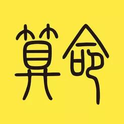

算命啦，算卦啦，相面之类的的生意一直在我们天朝有广泛的群众基础，其背后的真假，以及其具体如何实现的技术一直是我蛮好奇的事情。最近粗粗地把之前李笑来推荐的这本《江湖丛谈》看了一部分，算是大致了解了算命这个生意的不同种类，以及其商业闭环是如何实现的。
人们之所以想要算命，一是想要知道自己的未来，二是想要一定程度上把自己的未来变好。而之所以人们愿意找算命的问这些事，是因为算命的证明了自己拥有某些超自然的力量，可以知道一个人的过去以及未来。
那么算命的要怎么让人们相信自己真的有这样的超自然的能力呢？自然是要准确地说出一些人们身上的信息。
那么他们是怎么做到的呢？方法五花八样，有相对比较“腥”的方法，即所谓作弊的方法，可以从人们身上套出对应的信息。也有相对比较“尖”的方法，即依靠一些算命的专业书的公式，结合上自己的一些经验，推理出人们身上的信息。
变魔术的方式
我们从最“腥”的方法开始说起。
算命中有一种叫哑金的，是这么给人算的。他先给大家看自己手上的一张空白的字条，上面什么也没有。然后他看一眼被算的人，就开始往纸条上写字。不过他写的东西捂得很严实，不让大家看见。
写完以后，他指指他摊上写的“父母双全，父母不全”问被算的人。比如被算的人说：“我父母不全”。他这时候亮字条，果然写的是父母不全。
依次类推，不管是有多少个兄弟，多少个小孩，类似的事情他的纸条都能写对。
那么他是怎么做到的呢？
其实这就是一个非常类似于变魔法的手艺。他事先写好了所有的选项，然后被算的人说出对应的答案以后，他只要把对应的纸条变出来就行了。
类似的手法还有别的，不过这种算法一般都有一个共同特点，就是他预先记录下来的“预言”是不会给任何人看到的，然后在得到被算的人的答案以后，通过某些方式把答案弄到那个预先记录的东西上。
通过侧面信息推测
上一部分讲的最“腥”的方法最大的风险是手法被人看破，不过只要不被看破，基本上没有什么风险。而这一部分讲的第二种方法则开始有了失败的概率。
这第二种方法，是通过一些侧面的信息推测出这个人的其它信息。
比如说算命的可能在算命的过程中，很无意地问：“你是哪县的人？”。
被算的人说：“我是房山县周口的人。”
算命的说：“我看你的气色发滞，印堂发黑，目下你要和人家打官司对不对呀？”
被算的人说：“不瞒先生，你算得对，我还求先生细给我看看，我这场官司打的能不能赢？”
算命的说：“先不用告诉我你官司输赢，我先给你算算你是为什么事打官司，叫大家看看我的水平如何”。
被算的人说：“你看看我为什么打官司吧。”
算命的说：“你的气色犯小人，二虎争食。”
被算的人说：“真对，真对。”
那么算命的是怎么算出来这些信息的呢？似乎这些侧面的信息并没有什么信息量呀，他是怎么推测出这些的呢？
其实这是一种“地理簧”。
在清末的时候，每一个县的人都有一定的特殊职业。比如山东章丘的人，在家乡就是务农种地，出门做事的话，有两个途径，一种在各种码头做绸缎行，第二是做铁匠的。算命的只要看看这个人穿的衣服怎么样，就可以推测出他做的是什么。
在我们这个case里，房山周口人一般是做什么的呢？
在清末的时候，那个地方的人大部分都在煤窑工作，而凡是有矿产的人都免不了争夺。要是这样的人没事，一般不会去北京（在这个case里算命的在北京），要是真的来了北京，基本上就是来打官司的。所以说他要打官司，说他打官司的原因是“二虎争食”，其实都是这样推断出来的。
不单单地理信息有用，其实别的信息也有很多用处。
比如说算命的可能会问：“你今年多大岁数，你媳妇多大岁数？”
被算的人说：“我今年三十二岁，我媳妇今年三十五岁。”
就仅仅凭借这个信息，算命的就可以说：“按你这人的相貌，在幼年的时候运气很好，祖上根基不错，能够承受祖上的产业。”
为啥呢？
其实就仅仅由这人的媳妇比他大三岁，就能推测出这个信息。当然这是要根据当时社会的实际情况来推测的。
在20世纪30年代，天朝有个不良的风俗就是早婚。
一般这样做的大体都是有钱人家，因为有钱的人家最重视人丁兴旺，同时一般有钱的人家都是财旺人不旺。有了男孩，不等孩子长大成人，到了十三、四岁的时候就给儿子娶媳妇，一般娶的媳妇都要比少爷大个三、四岁，这样子又能早抱孙子，又能有人料理家务。
这样反推一下，自然就能得出这样的夫妻年龄结构家庭中男方家庭的经济背景。类似的还有很多，不过这些都是会随着时代一起变迁的。现在这个年代绝对不可能根据夫妻的年龄差来推断一家人的经济状况。
通过算卦专业书的公式推测
这个方法其实类似于上面的方法，不过很多规则是超越时代的。比如《江湖丛谈》中有提到一本叫《玄关》的算卦专业书，里面就有很多很神奇的规则。
比如《玄关》中有一句说：“老妇再嫁，谅必家贫子不孝….老夫奔忙无好子”。
这边特别解释一下“老夫奔忙无好子”这句，我想这是江湖上人通过大量经验总结出来的规律。一般要是算命的碰到六七十岁的人问卦，问做买卖兴衰，谋事能否有成，直接就可以推测出他家里的儿子不争气。
这其实也很容易理解，要是做生意的年纪大了生意做得好，子女能料理的好，怎么可能还需要他一个老头子在外面继续这样奔波打拼呢？
还有一句说：“父来问子子必有险，子来问亲亲必殃”。
这个也很容易理解。一般来说父亲不会特意去找算命的先生算儿子的事情，要是真的这么做了，一般儿子必定有难，所以他才会这么担心，才会去找算命的。
后记
除了这几种算卦的大类，还有很多别的小类别。比如说有一种算命的方法利用了人心理上的某些倾向。算命的会让你手握两节非常重的竹子，说是神竹。然后算命的说这个竹子有神力，当数字喊到你的年龄的时候，它就能知道，就会分开。
其实只要你自己有点信，当数到你的年龄的时候，由于竹子非常重，你就不由自主地放松了，竹子就分开了。其实是你自己把答案透露了出去。
这本书是20世纪30年代写成的，很多技法现在已经没有用了，比如一些变魔法的技巧，很难再让人相信了。
不过算命的流派中类似于算卦专业书中的这种公式推测，想必会经久不衰。毕竟有一些自然的规律很难改变，人心也很难改变。